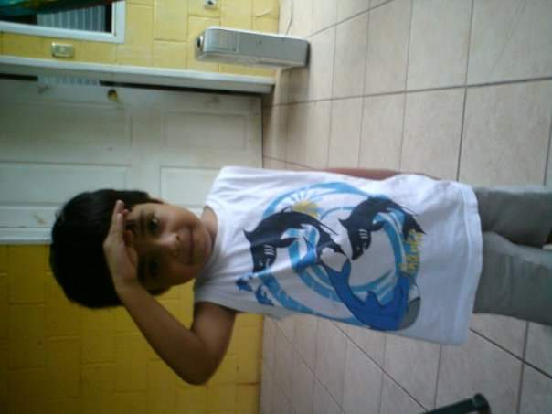

Introducción
Me llamo Rogelio Montalvo y soy un apasionado del desarrollo web. Desde pequeño me ha interesado la tecnología y cómo puede transformar la vida de las personas. Siempre busco aprender nuevas herramientas y mejorar mis habilidades para aportar soluciones innovadoras en cada proyecto en el que participo.
Formación Académica
Estudio Ingenieria de Software y Negocios Digitales en la Escuela Superior de Economia y Negocios. También cursé mis estudios de nivel medio superior en Externado de San Jose.
Experiencias
He trabajado en varios proyectos de desarrollo web utilizando tecnologías como HTML, CSS y JavaScript. Durante mi trayectoria, he colaborado en equipos multidisciplinarios, lo que me ha permitido desarrollar habilidades de comunicación y liderazgo. Además, he participado en hackatones y competencias de programación, donde he puesto a prueba mis conocimientos y aprendido de otros desarrolladores.

Proyectos
Algunos de mis proyectos incluyen varios sitios webs o FanPages en donde me dedico a variar en el estilo de mi creatividad. También desarrollé un sistema sencillo de gestión de inventario para una tienda de venta de ropa, lo que me permitió aplicar conceptos de bases de datos y lógica de negocio. Además, he tomado certificaciones y talleres de AWS enfocados en computación en la nube, ampliando mis conocimientos en infraestructura y servicios cloud.